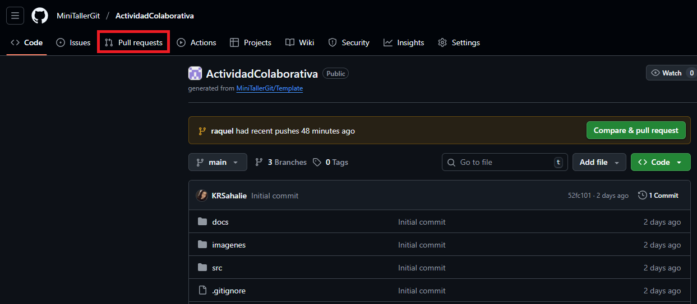
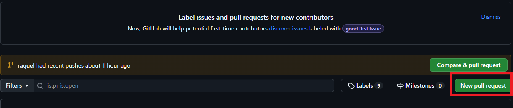
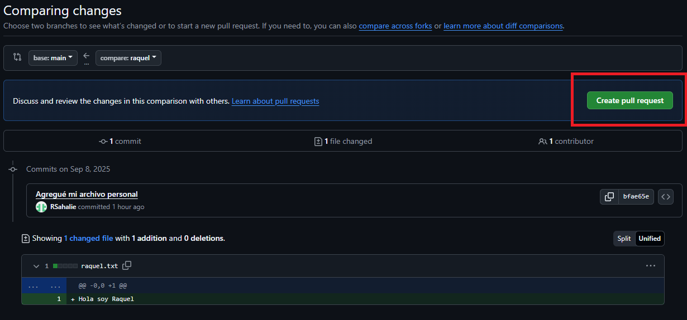
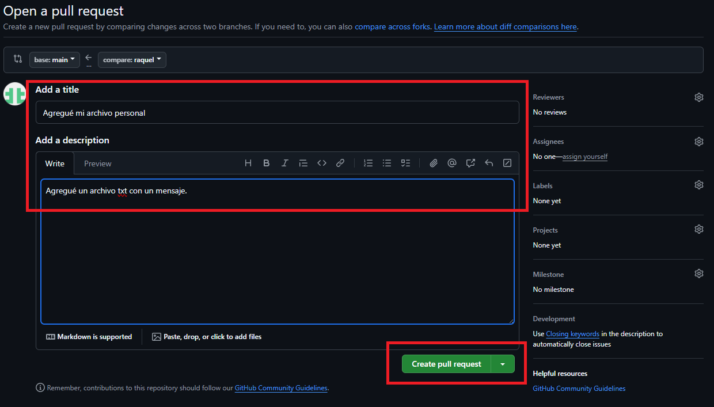
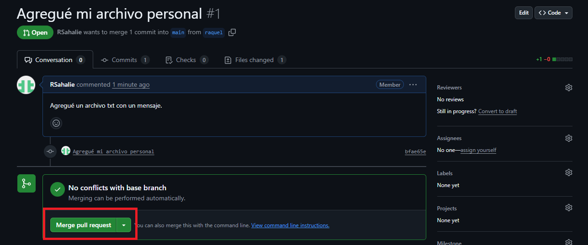
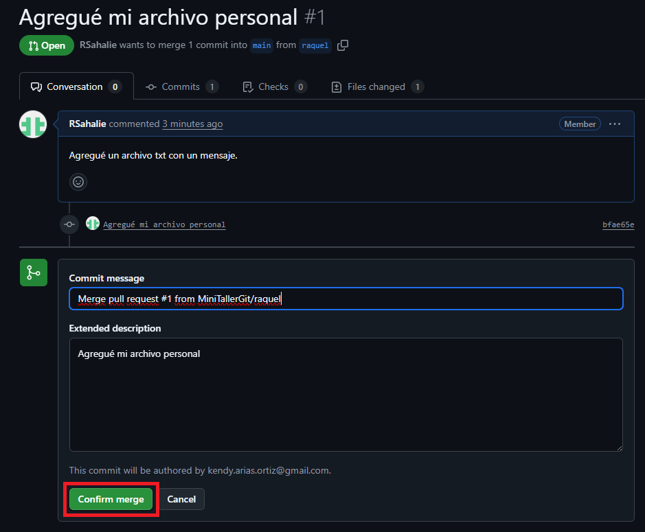
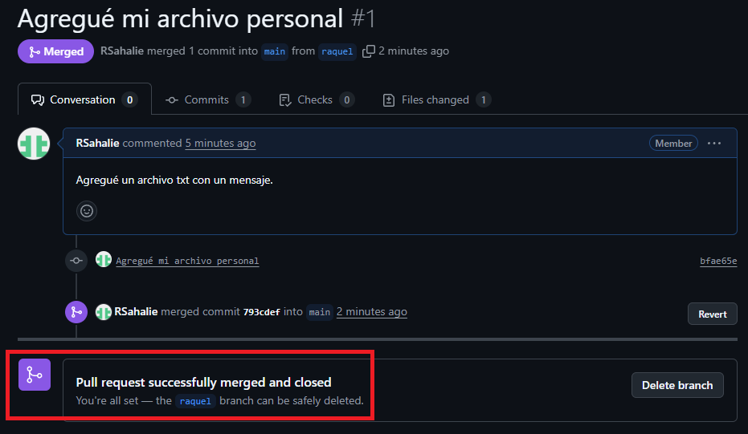
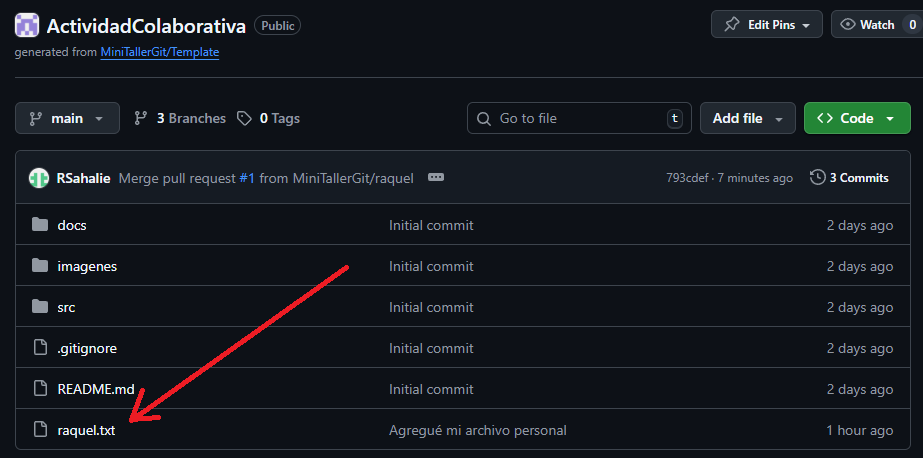

Ingresa al repositorio colaborativo donde subiste tu rama (en caso de que no lo tengas abierto):
Haz clic en la pestaña Pull requests
Haz clic luego en New pull request:
Selecciona las ramas:
main.raquel).Seleccione Create pull request para empezar a crearlo:
Escribe un título descriptivo y detalla los cambios que realizaste. Haz clic en Create pull request para enviarlo:
En este caso no hay conflictos y se procede a hacer Merge de manera automática:
Se confirma el Merge:
Se hace el Merge y se cierra el Pull Request (este último es automático):
Ahora el archivo creado con la frase, está visible para todos los colaboladores del repositorio:
main.